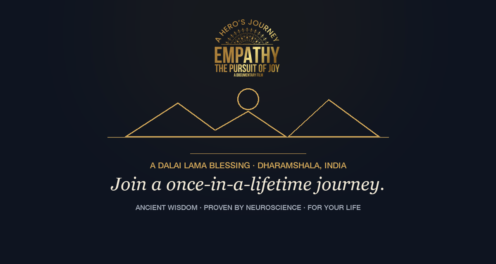

| Subject A | Come with us to the Dalai Lama's village |
| Subject B | A once-in-a-lifetime journey — and a blessing from His Holiness |
| Preview text | Join the film team in Dharamshala, India. A few places, on purpose. |
| Header image | newsletter-01-header.png (attached alongside this doc — upload with the email) |

Join a Once-in-a-Lifetime Journey with the Empathy Project
Ancient wisdom · proven by neuroscience · for your life
Ancient wisdom · proven by neuroscience · for your life
A story from the edit room. This month I've been living inside the footage — new interviews, string-outs, the slow magic of a documentary finding its shape. And one scene keeps stopping me: a schoolyard in Dharamshala where children learn compassion the way our kids learn multiplication. Not as a virtue. As a subject. That one scene is why this film exists.
The science, in one breath. When you give or receive empathy, your brain releases oxytocin — a molecule, not a metaphor. It opens a chain with no skippable steps: empathy → safety → vulnerability → connection → change. It's why arguments never change minds, and why that schoolyard works.
Someone worth highlighting. The children of the Creative Music Lab — Tibetan kids living in exile, learning music on donated equipment. Their recordings are joining the film's score. When the film plays anywhere in the world, they play with it.
And now, the part you can step into. This fall, a small group travels with the film team to Dharamshala — the mountainside village of His Holiness the Dalai Lama — as part of the filming itself. You don't have to commit to the project. Come get a blessing from His Holiness, and stand in the most compassionate place on the planet. Your contribution is tax-deductible, it funds the production, and your name goes in the film's credits.
WHERE: The mountainside village of the Dalai Lama, Dharamshala, India
HOW: Tax-deductible contributions to the film project — three tiers, every one with your name in the film's credits
For more information: www.EmpathyThePursuitOfJOY.com
With empathy,
Dr. Natalie Petouhoff
Executive Producer · 310-919-8467 · DoctorNatalie@gmail.com
Cadence going forward (recommended): biweekly — every issue publishes as a blog post first, and the newsletter drives to it. Issues 2 and 3 are already live as posts: "The Soil, Not the Flower" and "Empathy Isn't Emotional. It's Biological."